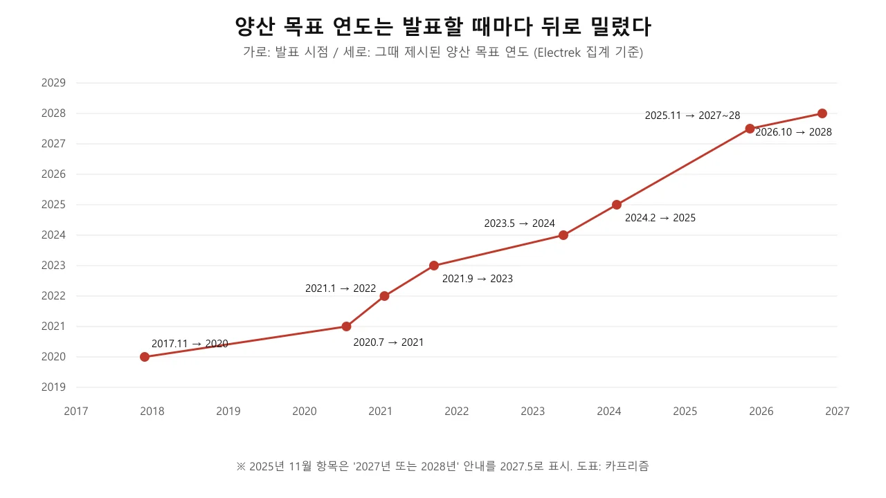
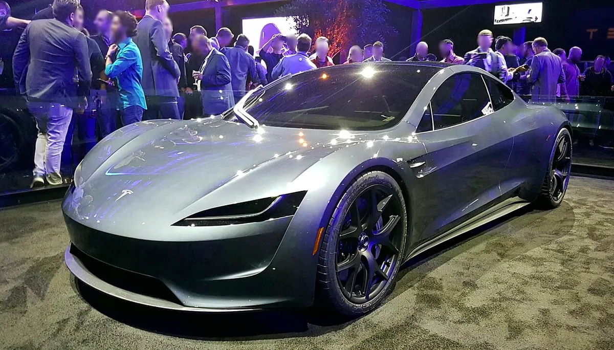
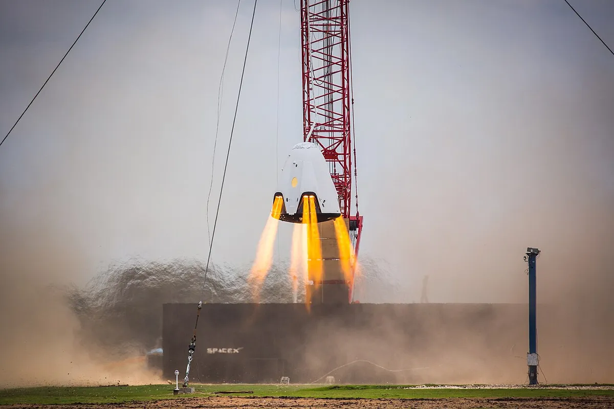
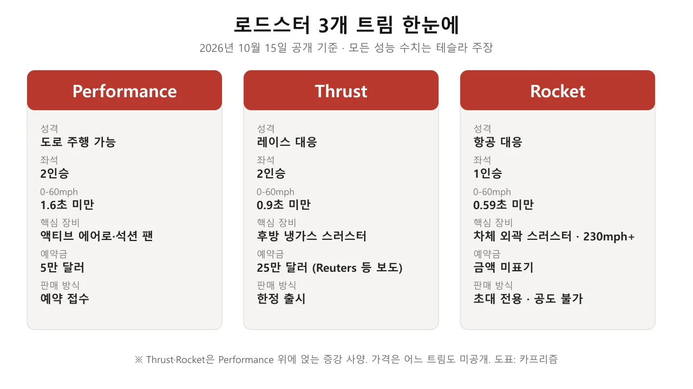
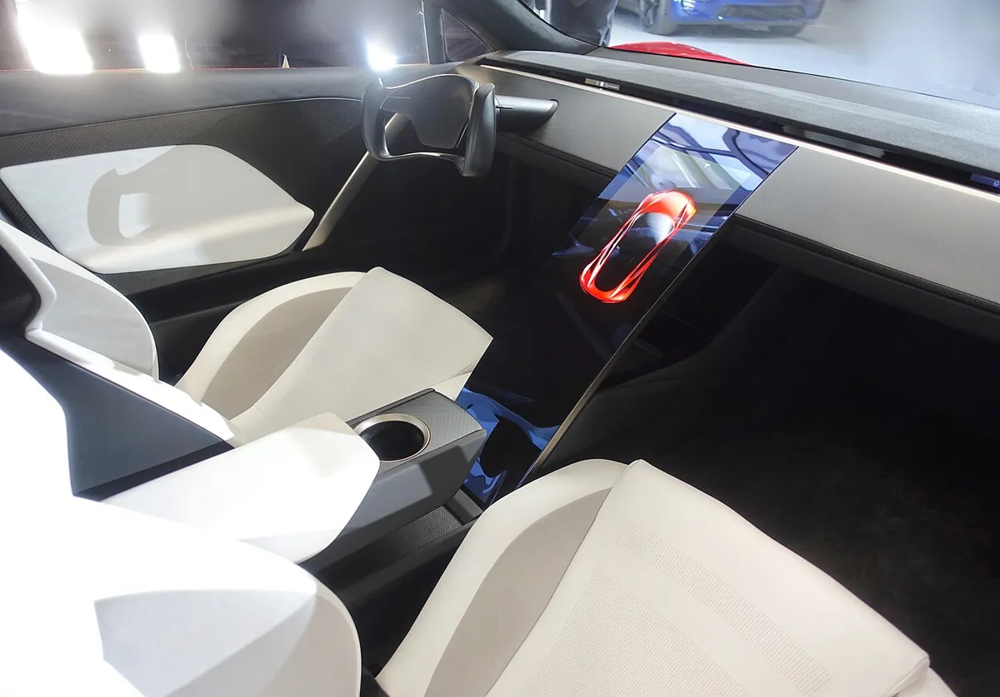
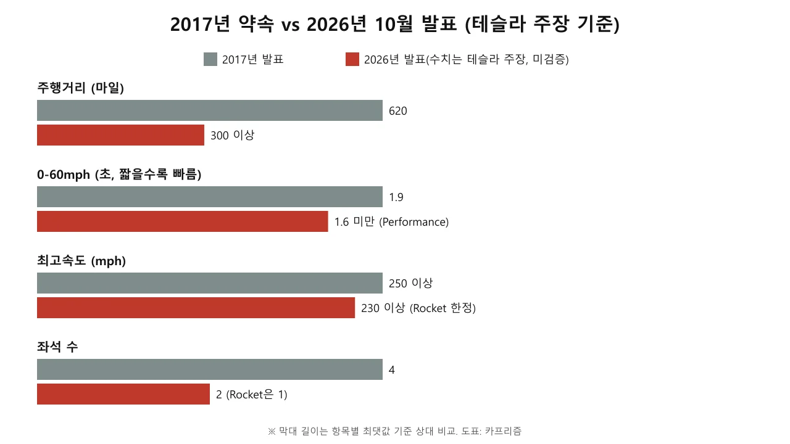
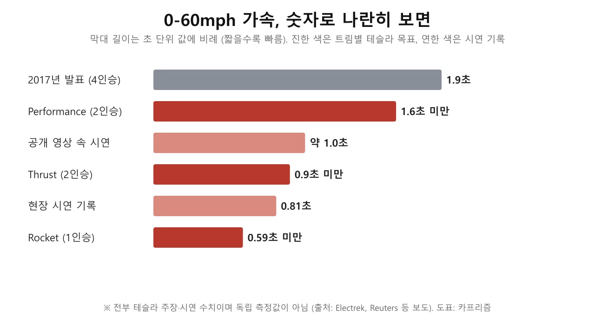
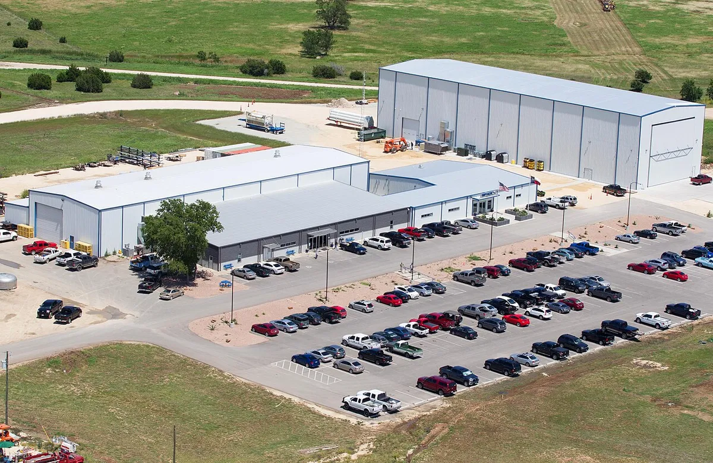
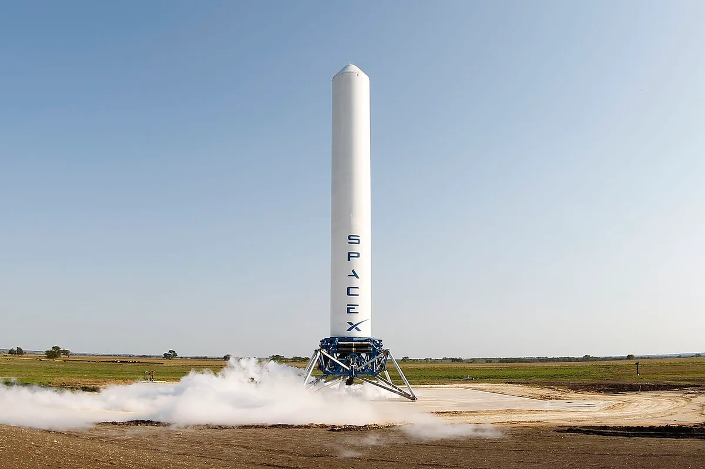
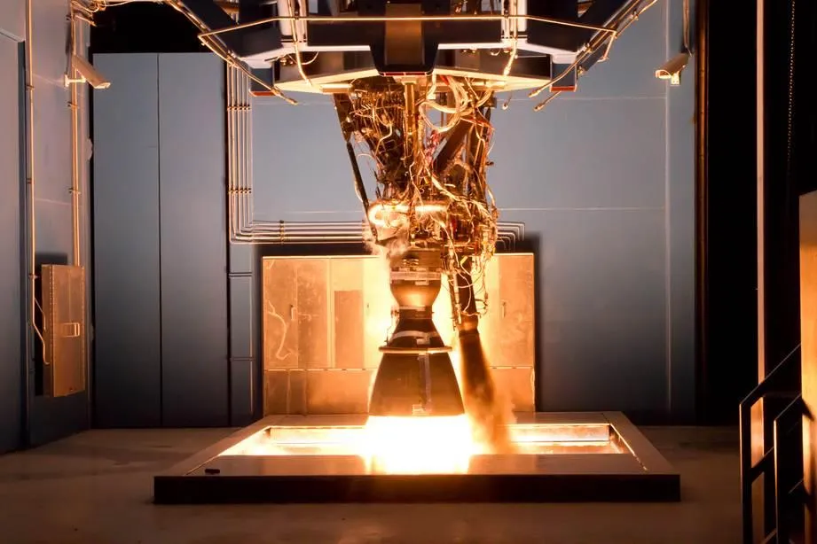

▲ 2017년에 공개된 로드스터 프로토타입(빨간색). 2026년형 실차 사진은 아니다 ⓒ Steve Jurvetson / Wikimedia Commons (CC BY 2.0)
2017년 11월 "2020년 생산"을 약속했던 차가 2026년 10월 15일(현지) 마침내 무대에 올랐다. 그런데 양산 시기는 "2028년", 주행거리는 620마일에서 "300마일 이상"으로 바뀌었다.
테슬라는 텍사스 웨이코 인근에서 열린 라이브 스트림에서 차세대 로드스터를 Performance·Thrust·Rocket 세 가지 트림으로 공개했다. 가격은 발표되지 않았고, 예약은 Performance 5만 달러, Thrust 25만 달러(보도 기준)의 예약금 구조로 다시 열렸다. 아래 내용은 2017년부터 지금까지 나온 약속과 이번 발표를 한 편에 모은 정리다. 공개 당일 보도를 근거로 했으며, 테슬라 자체 수치는 모두 '주장'으로 구분했다.
1. 2017년부터 2026년까지, 약속은 어떻게 밀렸나
테슬라 로드스터는 2017년 11월 세미 트럭 발표 말미에 깜짝 공개됐다. 당시 제시된 사양은 4인승, 0-60mph 1.9초, 주행거리 620마일, 최고속도 250mph 이상이었고 기본가 20만 달러, 파운더스 시리즈 25만 달러, 예약금 5만 달러였다. 생산 목표는 2020년이었다. 이후 일정은 Electrek이 집계한 아래 흐름대로 계속 뒤로 밀렸다.
| 시점 | 당시 제시된 양산 목표 | 비고 |
|---|---|---|
| 2017년 11월 | 2020년 | 프로토타입 공개, 5만 달러 예약금 |
| 2020년 7월 | 2021년 | Electrek 집계 |
| 2021년 1월 | 2022년 | Electrek 집계 |
| 2021년 9월 | 2023년 | Electrek 집계 |
| 2023년 5월 | 2024년 "희망" | 머스크 "약속은 아니다"라고 단서 |
| 2024년 2월 | 2025년 | 설계 목표 상향, 시연은 2024년 말 목표 |
| 2025년 11월 | 2027년 또는 2028년 | 시연은 2025년 말 → 2026년 4월 1일 등으로 연기 |
| 2026년 10월 15일 | 2028년 | 머스크 "2028, actually" (Electrek 보도) |

▲ 발표 시점별 양산 목표 연도 변화. Electrek이 집계한 날짜를 카프리즘이 도표로 정리했다 ⓒ 카프리즘 자체 제작 도표
시연 행사 일정도 마찬가지였다. Electrek에 따르면 2025년 말에서 2026년 4월 1일, 4월 말, 5월 말~6월, 8월 이후로 밀렸고 8월 중순에는 머스크가 이달 중 비행 시연을 언급했다. 이후 10월 1일로 확정됐다가 9월 28일 악천후를 이유로 10월 15일로 다시 미뤄졌다. 연기 사유와 행사장 표기 논란은 악천후 연기 기사에, 8월 디자인 총괄의 재예고는 홀츠하우젠 티저 기사에 따로 정리해 두었다.
2017년의 공개 장면은 테슬라 공식 채널의 'Tesla Semi & Roadster Unveil' 영상(약 35분)에서 볼 수 있다. 로드스터는 세미 트럭 발표의 마지막에 깜짝 등장했다. 영상 속 수치(1.9초, 250mph, 620마일)는 지금 기준으로는 지켜지지 않은 약속이다.
▲ 2017년 11월 세미·로드스터 공개 행사 영상(약 35분). 로드스터는 세미 발표 뒤에 공개됐다 ⓒ Tesla (YouTube)

▲ 2017년 11월 공개 당시의 2세대 로드스터 프로토타입. 이번에 공개된 2026년형 디자인과는 다르다 ⓒ Smnt, Wikimedia Commons (CC BY-SA 4.0)
2. 10월 15일 행사, 실제로 열렸고 무엇이 나왔나
행사는 열렸다. Electrek은 10월 15일 오후 6시 43분(PT)경 라이브 스트림으로 새 로드스터가 공개됐다고 보도했고, Teslarati는 장소를 웨이코(스페이스X 맥그리거 시험장 인근)로 적었다. Trending Topics는 맥그리거 시험장이라고 썼다. 로이터는 행사를 웨이코, 시연을 스페이스X 맥그리거 시험장으로 구분해 적었다. 보도마다 '웨이코'와 '맥그리거'가 섞여 있어 정확한 부지는 '확인되지 않음'으로 둔다.
행사 영상은 테슬라 공식 유튜브 채널에 약 23분 분량으로 올라와 있어 아래에 임베드했다. 영상 속 수치와 설명은 모두 테슬라의 주장이다.
▲ 테슬라 공식 채널이 2026년 10월 15일 올린 'Roadster Event' 라이브 영상(약 23분). Electrek이 슬로모션 가속 분석에 인용한 장면은 22분 32초 부근이다 ⓒ Tesla (YouTube)
보도가 공통으로 전한 내용은 다음과 같다.
| 항목 | 내용 | 근거 |
|---|---|---|
| 디자인 | 히든 헤드램프, 전폭 테일램프, 플러시 마운트 에어로, 아노 화이트 도장, 틴티드 윈도 | Electrek |
| 실내 | 스티어 바이 와이어 요크, 중앙 터치스크린과 소형 디스플레이 2개, 고정형 시트 | Electrek, Teslarati |
| 소재 | 마그네슘·티타늄·탄소섬유 | Electrek, Teslarati |
| 시연 | 경사 트랙을 타고 올라 거꾸로 달리기, 스러스터로 도약·킥플립 후 착지, 가속 시연(녹화 영상 1.0초, 이후 현장 라이브 0.81초). Electrek 분석에 따르면 시연 차 안에는 사람이 없었다 | Electrek, Teslarati |
| 양산 | 머스크 "2028, actually"(실은 2028년) | Electrek, 로이터 |
| 도로 주행 | Rocket은 "공공도로 주행 승인 대상 아님"(테슬라 로드스터 페이지 문구) | Electrek, Teslarati |
| 예약금 | Performance 5만 달러, Thrust 25만 달러, Rocket 초대 전용(금액 미표기) | 로이터, Trending Topics, Electrek(Performance) |

▲ 스페이스X 드래곤 2 캡슐 호버 시험(자료 사진). 로드스터 시연의 스러스터와는 별개 장비이며, 스페이스X 기술이라는 연결고리를 보여주는 참고 이미지다 ⓒ SpaceX / Wikimedia Commons (CC0)
행사의 큰 흐름은 "공개 → 시연 → 트림 안내"였다. Electrek 보도를 종합하면 테슬라는 라이브 스트림에서 디자인과 시연을 먼저 보여 줬고, 이후 X 스레드로 디자인 변경점·트림 구성·스러스터 원리·Track Mode를 차례로 풀었다. 시연은 경사 트랙에서 거꾸로 달리는 장면, 스러스터로 도약해 킥플립 후 착지하는 장면, 직선 가속 장면으로 이뤄졌다. 아래 영상은 테슬라 공식 채널이 행사 직후 올린 44초짜리 킥플립 클립이다.
▲ 테슬라 공식 채널의 'The Kickflip | Roadster'(44초). 테슬라가 편집해 올린 시연 영상이며 독립 검증된 것이 아니다 ⓒ Tesla (YouTube)
시연의 신뢰도에는 단서가 붙는다. Electrek은 차 안에 사람이 없었다고 적었고, 녹화 영상의 0-60mph는 약 1.0초, 이후 현장 라이브 시도는 타이머 문제를 겪은 끝에 0.81초가 나왔다고 전했다. 경쟁 모델과 같은 방식으로 측정된 값이 아니므로, 두 숫자 모두 '테슬라 시연 기록'으로만 읽어야 한다.
📍 이 기사의 사진이 2017년 프로토타입인 이유
테슬라가 공개 행사에서 쓴 공식 사진·영상은 재사용 허락이 확인되지 않았고, 유통 중인 렌더링 이미지 일부는 외신 워터마크가 붙어 있어 사용하지 않았다. 본문 사진은 2017년 프로토타입과 스페이스X 공개 자료이며, 2026년형 실차 사진은 아니다.
3. 세 가지 트림, 무엇이 다른가
트림은 Performance·Thrust·Rocket이다. Electrek에 따르면 Thrust와 Rocket은 Performance 위에 올라가는 '증강' 사양으로 소개됐다. 공개 후 테슬라의 X 스레드로 알려진 구성은 다음과 같다. 예약금은 로이터 보도 기준으로 Performance 5만 달러, Thrust 25만 달러이고 Rocket은 초대 전용이다.
| 트림 | 좌석 | 핵심 장비 | 0-60mph | 판매 방식 |
|---|---|---|---|---|
| Performance | 2 | 액티브 에어로, 멀티모드 석션(팬) 시스템 | 1.6초 미만 | 예약 접수 |
| Thrust | 2 | 후방 냉가스 스러스터 | 0.9초 미만 | 한정 출시 |
| Rocket | 1 | 차체 외곽 스러스터(상승·회전), 최고속도 230mph 이상(Electrek 표기) | 0.59초 미만 | 초대 전용, 공도 주행 불가 |

▲ 세 트림 구성 요약. 성능 수치는 모두 테슬라 주장이며, Thrust 예약금은 로이터 보도 기준이다 ⓒ 카프리즘 자체 제작 도표
Electrek은 "엔지니어링 자체는 실재하지만 성능 수치는 테슬라 주장"이라는 입장이다. Teslarati는 Performance를 '도로 주행 가능', Thrust를 '레이스 대응', Rocket을 '항공 대응(air ready)'으로 요약했다. 한편 Electrek은 스턴트가 가능한 트림이 한정·초대 전용이고 보증이 무효가 될 수 있다는 점을 들어 많이 팔리긴 어렵다고 전망했다. 공도 주행 불가가 공식 문구로 확인되는 것은 Rocket뿐이며, Thrust의 공도 주행 여부는 이번 조사에서 확인되지 않았다.

▲ 2017년 프로토타입의 실내. 2026년형은 요크와 고정형 시트로 바뀌었다고 보도됐다 ⓒ Steve Jurvetson / Wikimedia Commons (CC BY 2.0)
4. 제원: 테슬라가 말한 것 vs 확인된 것
2017년 대비 숫자는 대체로 후퇴하거나 조건이 붙었다. 주행거리는 620마일에서 300마일 이상, 좌석은 4석에서 2석(Rocket은 1석)으로 줄었고, 최고속도 230mph 이상은 Electrek이 Rocket 항목으로 적었고, 로이터는 머스크 발언을 근거로 차량 전체 수치처럼 전했다. 트림별 적용 범위는 확인되지 않는다. 0-60mph는 오히려 빨라졌지만 Performance 기준 1.6초 미만, 최상위 0.59초 미만이라는 목표 수치일 뿐 양산차 측정 결과가 아니다.

▲ 2017년 발표와 2026년 발표 수치 비교. 막대는 항목별 상대 길이이며 2026년 수치는 모두 테슬라 주장이다 ⓒ 카프리즘 자체 제작 도표
| 항목 | 2017년 발표 | 2026년 10월 발표 | 검증 상태 |
|---|---|---|---|
| 0-60mph | 1.9초 | Performance 1.6초 미만 / Thrust 0.9초 미만 / Rocket 0.59초 미만 | 현장 시연 0.81초, 녹화 영상 1.0초(측정 조건 불명). 양산차 측정 아님 |
| 주행거리 | 620마일 | 300마일 이상(트림 미지정) | 테슬라 주장 |
| 최고속도 | 250mph 이상 | 230mph 이상(Electrek은 Rocket, 로이터는 머스크 발언) | 테슬라 주장 |
| 배터리 | 200kWh로 보도(당시 테슬라 공식 수치는 확인하지 못함) | 공개되지 않음 | 확인되지 않음 |
| 좌석 | 4 | 2 / 1 | 발표 사실 |
| 다운포스 | - | 화면상 약 4,700kg, 코너링 2G | Electrek 분석이 과장 가능성 제기 |
| 스러스터 | - | 후방 약 80kN | Electrek 분석이 인용, 미검증 |
이번 발표로 새로 생긴 의문도 적지 않다. Electrek의 기술 분석에 따르면 0-60mph 시연 영상을 프레임 단위로 보면 스러스터가 돌기 시작한 뒤에도 차가 정지해 있는 장면이 있고, 차 안에는 사람이 없었다. 킥플립 장면에서 보이는 차 하부가 테슬라 특유의 평평한 배터리 하부 구조처럼 보이지 않아 시험차에 배터리가 없었을 수 있다는 추정도 나왔다. 가스 탱크 용량과 재충전 시간, 스러스터 지속 시간은 이번 조사에서 확인되지 않았다. 다운포스에 대해서도 Electrek은 화면에 표시된 4,700kg이 2톤 미만으로 보이는 차체에는 과하다고 보았고, 약 1,000kg의 맥머트리 스피어링이 약 2,000kg의 다운포스로 최대 3G를 낸다는 점을 비교로 들었다. 이 부분은 해당 매체의 분석과 추정이므로, 테슬라가 추가 자료를 내놓기 전까지는 '검증 전'으로 읽는 것이 맞다.
5. 가격과 예약금, 한국 돈으로는
가격은 어느 트림도 발표되지 않았다. Electrek과 Trending Topics, 로이터는 가격 미공개라고 전했고, Performance의 예약 구조는 즉시 5,000달러와 10일 내 45,000달러로 총 5만 달러다. 이는 2017년 예약금과 같다. Thrust는 로이터가 테슬라 예약 페이지 기준으로 25만 달러라고 전했고 Trending Topics도 같은 수치를 "예약금"으로 적었다. Carscoops는 같은 금액을 Thrust의 "가격(costs)"처럼 표현했는데, 가격은 어느 트림도 공개되지 않았으므로 예약금으로 보는 것이 맞다. 에드먼즈 요약에는 5,000달러 선납 후 245,000달러를 내는 구조로 소개됐다.
환불 범위는 보도마다 달랐다. 테슬라 예약 페이지는 즉시 결제하는 5,000달러(신용카드)에만 "fully refundable"이라고 표기하고, 45,000달러 송금(wire)의 환불 여부는 따로 밝히지 않으며, 송금이 도착해야 예약이 확정된다고 안내한다. 한편 2025년 9월 Autopian이 인용한 예약 약관에는 구매계약서에 서명하기 전에는 "어떤 이유로든" 계정에서 취소할 수 있고 예약금 전액을 환불받는다는 취지의 문장이 있다. 따라서 '5,000달러는 공식 페이지에 환불 가능으로 명시, 나머지는 약관상 환불이 가능해 보이나 페이지 표기는 불명확'이 가장 정확한 요약이다. 같은 매체는 앱에 취소 버튼이 없어 전화로 취소해야 했고 일부 환불이 지연된 사례도 전했다
| 항목 | 달러 | 원화 환산(가정) | 상태 |
|---|---|---|---|
| 예약금 1차(즉시) | 5,000 | 700만 원 | 공식 페이지에 "fully refundable" 표기 |
| 예약금 2차(10일 내) | 45,000 | 6,300만 원 | 미납 시 예약 취소(환불 여부는 페이지에 불명시) |
| 예약금 합계(Performance) | 50,000 | 7,000만 원 | 2017년과 동일 |
| 2017년 기본가 | 200,000 | 2억 8,000만 원 | 2017년 발표, 현재 유효 여부 불명 |
| 2017년 파운더스 시리즈 | 250,000 | 3억 5,000만 원 | 2017년 발표 |
| Thrust 예약금 | 250,000 | 3억 5,000만 원 | 로이터·Trending Topics 보도, 에드먼즈는 5,000+245,000달러로 소개 |
환산은 달러 금액에 1,400을 곱한 값이다(예: 50,000×1,400=7,000만 원). 실제 환율과 국내 수입 시 관세·개별소비세 등은 반영하지 않았다. 시장 반응은 확인된 것이 많지 않다. 로이터가 인용한 모닝스타 애널리스트 세스 골드스타인은 "테슬라에는 현재 헤일로 카가 없다"며 로드스터가 그 역할을 맡을 것이고 연 2,000대 안팎을 팔 것으로 봤다. 공개 직후 주가 반응은 이번 조사에서 확인하지 못했다. 앞선 예약금 재개 기사와 같은 가정이다.
▲ 2017년 프로토타입(빨간색). 2026년 공개 차량은 히든 헤드램프와 전폭 테일램프를 갖춘 새 디자인이라 이 차와 다르다 ⓒ Steve Jurvetson / Wikimedia Commons (CC BY 2.0)
6. 스페이스X 패키지와 다운포스, 기술적으로 무엇이 새로운가
이번 발표에서 처음 구체화된 것은 스페이스X 계열 기술의 실제 적용 방식이다. Electrek 보도 기준 테슬라는 대기 중에서 작동하는 냉가스 스러스터를 새로 개발했고, 가스는 탄소섬유 복합 압력용기에 저장한다고 밝혔다. 추력은 타이어가 낼 수 있는 힘의 4~5배라는 주장이다. 또 팬이 차 밑 공기를 빨아들이는 석션 시스템으로 정차 상태에서도 거꾸로 붙어 있을 수 있다고 했다. 트랙 모드에서는 차체가 낮아지고 옵티머스 액추에이터로 구동하는 액티브 윙이 펼쳐지며 다운포스가 F1에 근접한다는 설명이다.
이 중 석션·윙 구조는 발표 직전 포착된 특허와 방향이 맞닿아 있다. 특허 내용은 다운포스 특허 기사에서 다뤘다. 다만 특허가 곧 양산 사양이라는 증거는 없다. 발표 직전 상황은 10월 공개 티저 기사, 세미 인도와 겹친 티저 시점은 세미 티저 기사에서 볼 수 있다.

▲ 0-60mph 가속 비교. 진한 색은 트림별 목표, 연한 색은 시연 기록이며 모두 테슬라 주장이다 ⓒ 카프리즘 자체 제작 도표

▲ 스페이스X 맥그리거 시험 시설 전경(자료 사진). 로드스터 시연이 이 부근에서 열렸다고 보도됐으나 정확한 부지는 매체마다 달랐다 ⓒ SpaceX / Wikimedia Commons (CC0)
✅ 지금 시점에서 확정된 것 / 확정되지 않은 것
· 확정(발표 사실): 행사 개최, 3개 트림 구성, 좌석 수, 예약금 구조(Performance 5만 달러, Thrust 25만 달러), 머스크의 "2028년" 발언
· 테슬라 주장(미검증): 0-60mph 1.6·0.9·0.59초 미만, 230mph 이상, 300마일 이상(트림 구분 불명), 다운포스·추력 수치
· 확인되지 않음: 가격, 배터리 용량, 트림별 주행거리, 법규 인증 일정, 45,000달러 송금분의 환불 조건
· 정리 필요: 생산 공장은 행사 보도에 명시되지 않았다. 테슬라 임원 라스 모라비가 5월 팟캐스트에서 "텍사스에서 생산될 것"이라고 말했고 Teslarati는 기가 텍사스 생산 예정으로 적었지만, 이번 공개에서 확정 발표된 것은 아니다
7. 경쟁 모델 대비 어디쯤인가
직접 비교할 양산 경쟁 모델은 아직 없다. 가격·배터리·양산 시점이 비어 있어 리막 네베라나 포르쉐 등과 수치로 맞대는 것은 근거가 부족하다. 다만 Electrek 분석은 팬 방식 다운포스를 쓰는 맥머트리 스피어링이 이미 서킷 기록을 세우고 있다고 지적하며, 스러스터가 최고속도 영역에서 얼마나 이득인지는 의문이라고 했다. Electrek 본 기사는 테슬라 주장대로라면 Thrust·Rocket의 가속이 리막 네베라를 포함해 시중의 어떤 차보다 빠르다고 전하면서도 성능 수치는 독립 검증 전이라는 입장을 유지했다. 이 비교는 테슬라 수치를 전제로 한 것이다.
포지션을 정리하면 Performance는 '초고성능 전기 스포츠카', Thrust·Rocket은 판매량이 아주 적을 한정·초대 전용 상품이라는 구도다. Electrek 필자는 스턴트 가능 트림이 소수에 그칠 가능성을 언급했다.

▲ 맥그리거에서 촬영된 스페이스X 그래스호퍼 시험 장면(자료 사진). 이 부지는 과거 로켓 이착륙 시험에도 쓰였다 ⓒ SpaceX / Wikimedia Commons (CC0)
8. 한국 독자에게 의미는
한국에서의 예약 가능 여부와 인도 계획은 확인되지 않았다. 공개 직후 보도 어디에도 한국 시장 일정이나 가격은 없다. 예약은 테슬라 공식 홈페이지 구성기를 통해 접수된다고 보도됐으나, 한국에서 같은 조건으로 접수되는지는 이번 조사에서 확인하지 못했다. 예약 전에 지역별 약관과 환불 조건을 테슬라 공식 페이지에서 직접 확인해야 한다.
또 Rocket은 공도 주행 승인 대상이 아니고, 도로 주행이 가능한 Performance도 양산 시점이 2028년이다. 국내 인증과 수입 절차는 별도이므로 인도 시기를 가늠할 근거는 현재 없다. 기존 예약자의 지위가 어떻게 되는지도 테슬라가 밝히지 않았다고 Carscoops는 지적했다. 참고로 예약금 구조는 지역마다 다르다. 캐나다는 6,000달러(카드)와 58,000달러(송금)로 안내됐고 미국은 5,000달러와 45,000달러다. 한국 조건은 확인되지 않았다.

▲ 스페이스X 맥그리거 시험장의 로켓 엔진 연소 시험. 로드스터 스러스터는 이와는 다른 냉가스 방식이다 ⓒ SpaceX, Wikimedia Commons (CC0)
9. 요약
테슬라 로드스터는 2017년 첫 공개 이후 9년 만인 2026년 10월 15일(현지) 공개 행사가 실제 열렸다. Performance·Thrust·Rocket 세 트림이 발표됐고, 0-60mph 1.6초·0.9초·0.59초 미만, 주행거리 300마일 이상, 최고속도 230mph 이상이 제시됐지만 모두 테슬라 주장이며 양산차 측정값이 아니다.
양산 시점은 머스크의 "2028년" 발언이 유일하고 가격은 발표되지 않았다. Performance 예약금은 5,000달러와 45,000달러를 합친 5만 달러(1달러=1,400원 가정 시 7,000만 원)로 2017년과 같고, Thrust는 25만 달러(3억 5,000만 원)로 보도됐다. 환불이 명시된 것은 5,000달러뿐이다. 배터리 용량과 한국 판매 여부는 확인되지 않았고, 생산 공장은 이번 행사에서 확정 발표되지 않았다. 추가 정보는 테슬라 공식 발표를 기준으로 다시 확인해야 한다.